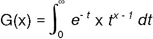

Syntax
#include <math.h> /* SAA extension to ANSI */ double gamma(double x);Description
gamma computes the natural logarithm of the absolute value of G(x) (ln(|G(x)|)), where

Portability Note According to the SAA standard, x must be a positive real value. Under The Developer's Toolkit compiler, x can also be a negative integer.
gamma returns the value of ln(|G(x)|). If x is a negative value, errno is set to EDOM. If the result causes an overflow, gamma returns HUGE_VAL and sets errno to ERANGE.
This example uses gamma to calculate ln(|G(x)|), where x = 42.
#include <math.h>
#include <stdio.h>
int main(void)
{
double x = 42,g_at_x;
g_at_x = exp(gamma(x)); /* g_at_x = 3.345253e+49 */
printf("The value of G(%4.2f) is %7.2e\n", x, g_at_x);
return 0;
/****************************************************************************
The output should be:
The value of G(42.00) is 3.35e+49
****************************************************************************/
}
Related Information